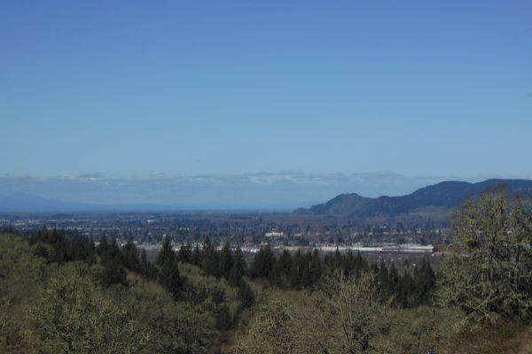
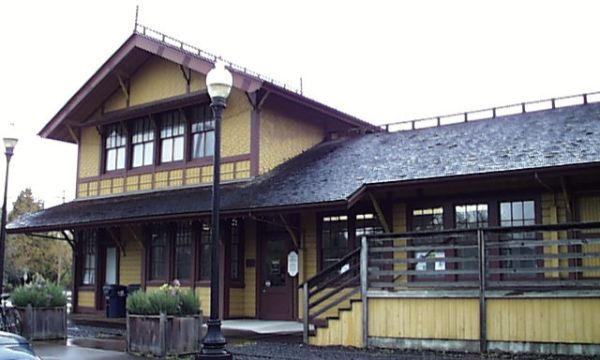

Current Temperature:
°F
Current Wind Speed:
mph
Today's Forecast:
10 Day Forecast
| Day 1 | Day 2 | Day 3 | Day 4 | Day 5 | Day 6 | Day 7 | Day 8 | Day 9 | Day 10 |
|---|---|---|---|---|---|---|---|---|---|
| °F | °F | °F | °F | °F | °F | °F | °F | °F | °F |
History of Springfield

Springfield was settled when Elias and Mary Briggs and their family arrived in 1848.
They were among the first party to travel to the region via the "Southern Route"
by Klamath Lake, over the Cascades, into the Rogue Valley, then north to the
Willamette Valley.[9] Elias Briggs along with William Stevens ran a ferry
on the nearby Willamette River.
According to donation land claim records, Stevens was the first settler to
stake a claim in the Springfield locale, arriving in October 1847.
He commenced building a house with his three oldest sons, and when the house
was completed in December, the rest of his family joined him on
Christmas Day that year.
Another early arrival in the Springfield vicinity was Captain Felix Scott, Sr.
who settled between the McKenzie and Willamette rivers in 1847.
Source: Wikipedia